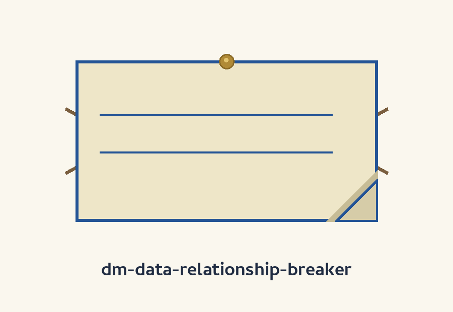
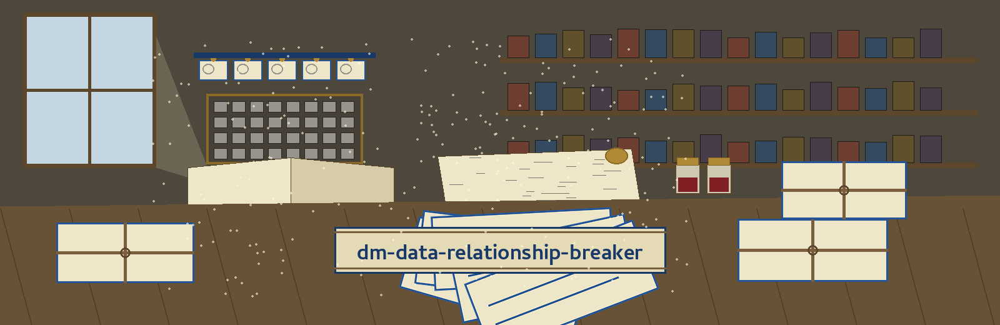

dm-data-relationship-breaker: The Dictionary's Citation Slip Readers
Wherever this site names itself, it uses the joined form dm-data-relationship-breaker: The Dictionary's Citation Slip Readers, repo first, theme second. The page is built as a sorting table read bundle by bundle, each plate a bundle opened in turn, with headings written as catalogue entries, author first, a small date stamp picture at the left, and the citation slip as section marker throughout.



● Brass pin count: seven plates on the table, one drawer of permission and credit.
City Records to Generate and Reassign
Same City, New Pairings
Plate one: the job
The tool identifies and breaks relationships between data points to prevent re-identification. Its printed example moves addresses around among individuals inside one city until the direct pairings are gone. The plate keeps the family note the README prints at the end of its description: a tool among those that generate or mask sensitive data with realistic looking but meaningless values. No address appears anywhere on this site, in any plate, for any reason, and no name or record value is printed either.
Plate two: fetching, with the repair in the open
git clone https://github.com/ShadowGuard-AI/dm-data-relationship-breaker
The line above is labelled a correction. The address printed in the README names a predecessor house, ShadowStrikeHQ, and following it literally sends the visitor to an organisation this repo no longer lives under. The corrected spelling is shown here in the open, with the reason beside it, and is never passed off as the README's own wording.
Plate three: the invocation shape
./dm-data-relationship-breaker [params]
That shape is all the source gives: program first, bracketed parameters trailing. No city from anyone's records is set in the empty space on this plate.
Plate four: the controls in README order
Help first: -h, the flag that shows the help message and exits. City next: --city, the city within which addresses are reassigned. Number of records next: --num_records, the count of records to generate and reassign. Output file next: --output_file, with the README's own admission printed beside it in full view: No description provided. Seed last: --seed, described in the README as an optional seed for Faker.
Plate five: the printed example, worked slowly
Inside one city, addresses are shuffled among individuals at random. The person stays. The address moves. After the shuffle, an address no longer points back at the person who held it before, and the direct linkage the README names is gone. This plate works the example with shapes and arrows only. It prints no street, no number, no name.
Person → address held before the shuffle. Person → a different address after it. The pairing is cut the way a citation reader cuts a sentence free of its page.
Plate six: the seed, and the silences beside it
The README calls the seed optional and ties it to Faker. It does not say what leaving the seed out changes, and this plate does not fill that silence in. Beside the seed, the plate notes the other silences a visitor will meet: no default is printed for city, for record count, or for output file.
Plate seven: the absence, at full size
The live README carries NO behaviour section at all. No exit code exists in the record. No write order exists in the record. No failure behaviour is printed anywhere in the source.
This absence is printed at full size on purpose. Where a neighbouring record states how a program refuses, orders its writes, or reports a failure, this record is silent, and the site reports the silence rather than inventing a behaviour to fill it.
The drawer: permission and credit on separate slips
One slip cites the standalone LICENSE file: MIT wording spanning 2025-2026, its proprietor given by outline only: a year span, a two word pen name, a bracketed given name with a lone initial, a bracketed handle led by an at sign. The line itself is not reproduced on this page.
The facing slip transcribes the README's parting credit, kept intact: Copyright (c) ShadowStrikeHQ. That house name belongs to the predecessor regime. A reader can compare the two slips in a glance. Permission is granted by the first slip. The second merely records who signed the older work, and a signature is not a grant. No third slip amalgamates them.
The preserved README record
 # dm-data-relationship-breaker Identifies and breaks relationships between data points to prevent re-identification. For example, it could randomly reassign addresses to individuals within a city to eliminate direct linkages. - Focused on Tools designed to generate or mask sensitive data with realistic-looking but meaningless values ## Install `git clone https://github.com/ShadowStrikeHQ/dm-data-relationship-breaker` ## Usage `./dm-data-relationship-breaker [params]` ## Parameters - `-h`: Show help message and exit - `--city`: The city to reassign addresses within. - `--num_records`: The number of records to generate and reassign. - `--output_file`: No description provided - `--seed`: Optional seed for Faker ## License Copyright (c) ShadowStrikeHQ